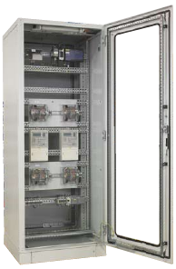

FQ meter cabinets
Meter cabinets are made on the basis of SZE2 enclosures.
Depending on a project, their dimensions are
2000 x 600-800 x 600-800 mm. The typical configuration
is the mounting plate. There is also a solution with a split
mounting plate. Its upper part is then rotatable, and
the lower part is fixed. The upper one is designed for
installation of electricity meters, whereas the lower one
for mounting measurement strips. There are also solutions
with a swing frame. Electricity meters are then mounted on
the frame, and the measurement strips on the mounting
plate or the system of mounting profiles. Access may be
one-sided or two-sided. Glazed door.
Cabinet configuration is tailored to the station design
and can always be adapted to the customer's requirements
– both in terms of dimensions and equipment.
